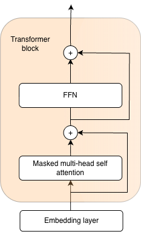

XSA: Less is more
Browsing through YouTube videos I came across an interesting one [1]. An interesting idea, nice animations, and a concept that felt intuitive to me in a way. I then read the paper [2] that inspired the video. I like it, an elegant approach that, based on the paper, yields improvements with minimal changes to the attention mechanism architecture code.
I decided to write a short piece as an exercise and I am giving myself two hours for it. I will try to explain the paper and the idea using abstractions that feel natural to me and help me think about what happens under the hood of a language model that is based on the decoder part of the original transformer. The structure of the blog will be as follows: I will pose a question to myself, and then try to answer it. It should be kept in mind that most of this blog will actually be based on an abstract explanation of the empirical observations presented in the paper and should therefore be taken with a grain of salt. Note that throughout the text, tokens and words are used interchangeably.
What does this paper present?
In one sentence, this paper introduces a small modification to the attention mechanism that makes the model better at the standard language modeling task, consistently achieving better performance than models that use standard self-attention (according to the author and his experiments, see [2] for more information).
What is the high-level idea that allowed them to achieve better performance?
Separation of responsibilities between the attention mechanism and the feed-forward network within the transformer block. In this way, each of the two modules uses its full capacity. Each module is responsible for its own task and does not interfere with the work of the other, so there is no ambiguity about which part of the overall work each module takes on, nor any competition between them.
What does this look like at a slightly lower level?
To understand this idea at a lower level we need to consider the structure of the transformer block. For the purposes of illustration and this blog, let us consider only a transformer block consisting of a Self-Attention module, an FFN (MLP) module, and 2 skip connections. We omit the normalization layers for ease of understanding.

What is the input to that transformer block?
For ease of abstraction, let us assume that our imaginary transformer block is preceded by an embedding layer. The embedding layer receives token IDs, which are numerical identifiers for the byte sequences that our model uses for language modeling (these are the smallest units of language that our model is capable of predicting). The embedding matrix contains vector representations of each token (read: building block of language). These are distributed representations of their meaning (see blog 1 for more information on this) that the neural network will use to predict the next tokens in the sequence (this is the causal language modeling task). So to summarize, the input to the transformer block is a batch of sequences of vector representations of tokens.
What is the role of the transformer block?
The role of the transformer block is to, based on the initial vector representations of tokens, create better context-aware vector representations that will enable easier language modeling and improve performance on all downstream tasks. We are not limited to a static vector representation of a word, we change it depending on context. Quite naturally, our understanding of a word and its meaning changes depending on the context in which it appears.
How will this be achieved?
The main driver of this is the attention mechanism. Vector representations of words exchange information with each other, influencing the representations of their neighbors. We use the matrices \(W_q\), \(W_k\), \(W_v\) to obtain queries, keys, and values from the current vector representations of tokens. Conceptually, it is useful to imagine the following: each token has a question it asks of the other tokens (query), a key that will be used when measuring the relevance of a potential answer (how good of an answer for a query is the current value), where the relevance measure is the dot product between the key and the query. The initial vector representations will be modified based on the answers the tokens provided to each other, as well as the degree of alignment (attention) between the key and the query. The more similar the query and the key, the more information from the answer (value) behind that key the token will incorporate into its new representation.
When posing a question, each token asks itself and its predecessors.
Is it okay for it to ask itself a question?
Yes, but the token posing the question tends to think that its own answer is the best, which leads us to a problem.
How does this lead us to a problem?
Tokens do not enter the exchange of information with an open mind, or potentially ask a question for which they themselves have the most suitable key, so they most influence the modification of their own representation. This is problematic because the goal of the attention mechanism is the exchange of information between tokens within the context. An effective communication mechanism should gather as much information as possible from neighboring tokens. Within the communication mechanism, a token should not be confirming its own views but rather listening to its neighbors.
What is the role of the FFN that follows the attention layer?
This is where the token can and should think about its own meaning, isolated from its context. Having previously gathered information from tokens in its context and accumulated it through the skip connection onto its initial representation, in the Feed Forward Network the token independently processes and integrates everything into a new context-enriched representation.
How do we enable the attention layer to serve only for gathering information from surrounding tokens without incorporating information about itself?
By forcing the attention mechanism to retain only information that is orthogonal to its own value vector.
Consider \(\mathbb{R}^3\). In it there is a vector \(y_i\) representing the context-aware representation of token \(i\), and a vector \(V_i\) of its own direction, representing the answer the token gives to its own question. We want to find a new vector \(z_i\) that is as close as possible to \(y_i\) while not containing information from \(V_i\). In other words, we want to retain as much information from \(y_i\) as possible, discarding only the information related to the direction of \(V_i\). The dot product of a vector that contains no information carried by \(V_i\) and the vector \(V_i\) is 0, and it lies in the subspace, \(\mathbb{R}^2\), the plane to which \(V_i\) is orthogonal. The vector that lies on that plane and is closest to \(y_i\) is its projection onto that plane, obtained as the difference between \(y_i\) and its projection onto the line spanned by scalar multiples of \(V_i\).
XSA extends (1) with a single additional step:
How does this look in code?
Algorithm 1 from [2] shows the full multi-head causal XSA implementation as PyTorch-style pseudo code. The key change over standard attention is two lines: normalize the value vectors, then subtract their projection from the attention output.
# x: (B,T,D)
# Wq, Wk, Wv, Wo: (D,D)
# H: number of heads
def exclusive_self_attention(x, Wq, Wk, Wv, Wo, H):
B, T, D = x.shape
# linear projections
Q = (x @ Wq).reshape(B, T, H, D // H).transpose(1, 2)
K = (x @ Wk).reshape(B, T, H, D // H).transpose(1, 2)
V = (x @ Wv).reshape(B, T, H, D // H).transpose(1, 2)
# standard multi-head causal attention
Y = torch.nn.functional.scaled_dot_product_attention(Q, K, V, is_causal=True)
# XSA: remove projection of output onto own value direction
Vn = torch.nn.functional.normalize(V, dim=-1)
Z = Y - (Y * Vn).sum(dim=-1, keepdim=True) * Vn
# output projection
out = Z.transpose(1, 2).reshape(B, T, D) @ Wo
return outWhy not simply zero out the attention weight associated with the own value vector?
If we zero out the weight \(a_{i,i}\) associated with \(V_i\), we effectively suppress only the direct influence of token \(i\)'s own value. However, if there are correlated vectors \(V_j\) in the sequence, their attention weights will allow the leakage of redundant information within the attention mechanism, using the capacity of the attention layer to carry information that will arrive anyway via the skip connection.
Additionally, due to the nature of the attention mechanism (the softmax function), no matter how irrelevant the other tokens' keys are for a given query, the model must distribute all of its attention across them. The attention sink allows the currently observed token to aggregate excess attention and redirect it to itself without forcing that attention onto irrelevant tokens, and not zeroing \(a_{i,i}\) can help by essentially acting as attention sink.